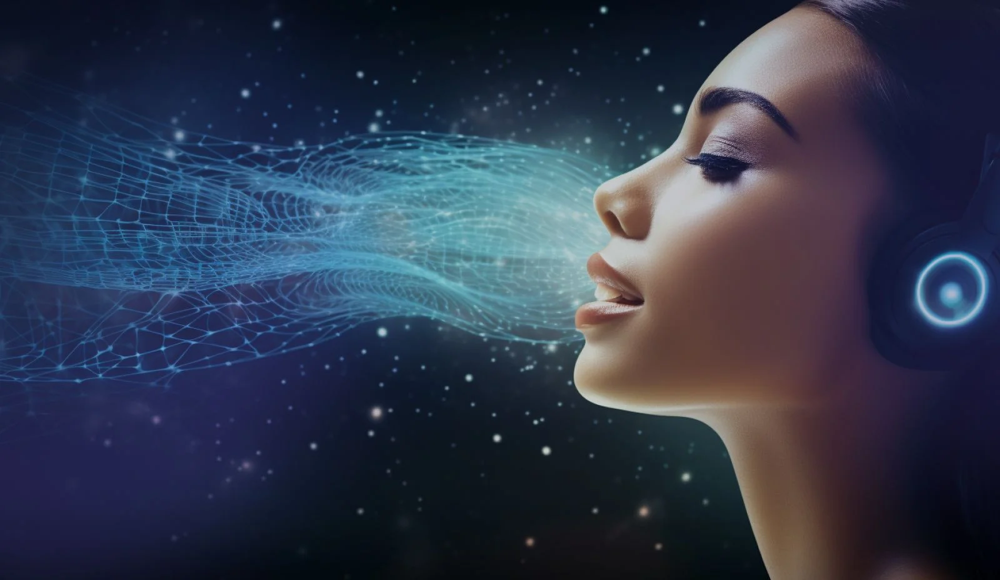

The Oppressed Society

What is Voice modulation using AI?
Voice modulation using AI involves the use of artificial intelligence technologies to alter or
synthesize speech patterns, tones, and styles.
This can include changing the pitch, speed, accent, and emotional tone of a voice.
It can help you emphasize key points, express emotions, create contrast, and avoid monotony.

Misuse of Image generation
1. Speech Synthesis: AI models, particularly those based on deep learning, can generate synthetic voices that mimic human speech. These models can create diverse vocal characteristics and modulate speech to sound like different people or fit different emotional contexts.
2. Voice Cloning: AI can create a digital replica of a specific person's voice. By analyzing samples of a person's speech, AI systems can replicate their voice and modulate it in various ways, such as altering the tone or adjusting the speech style.
3. Emotion and Tone Adjustment: AI can analyze the emotional content of spoken language and adjust the voice accordingly. For instance, it can make a voice sound happier, more serious, or more enthusiastic based on the context.
4. Real-time Modulation: AI-powered tools can modify voices in real-time during live conversations or broadcasts. This can be used for applications like virtual assistants, live streaming, or even interactive entertainment.
5,. Voice Transformation: AI can transform one voice into another by changing attributes like accent or gender. This technology is often used in entertainment and gaming to create diverse character voices.